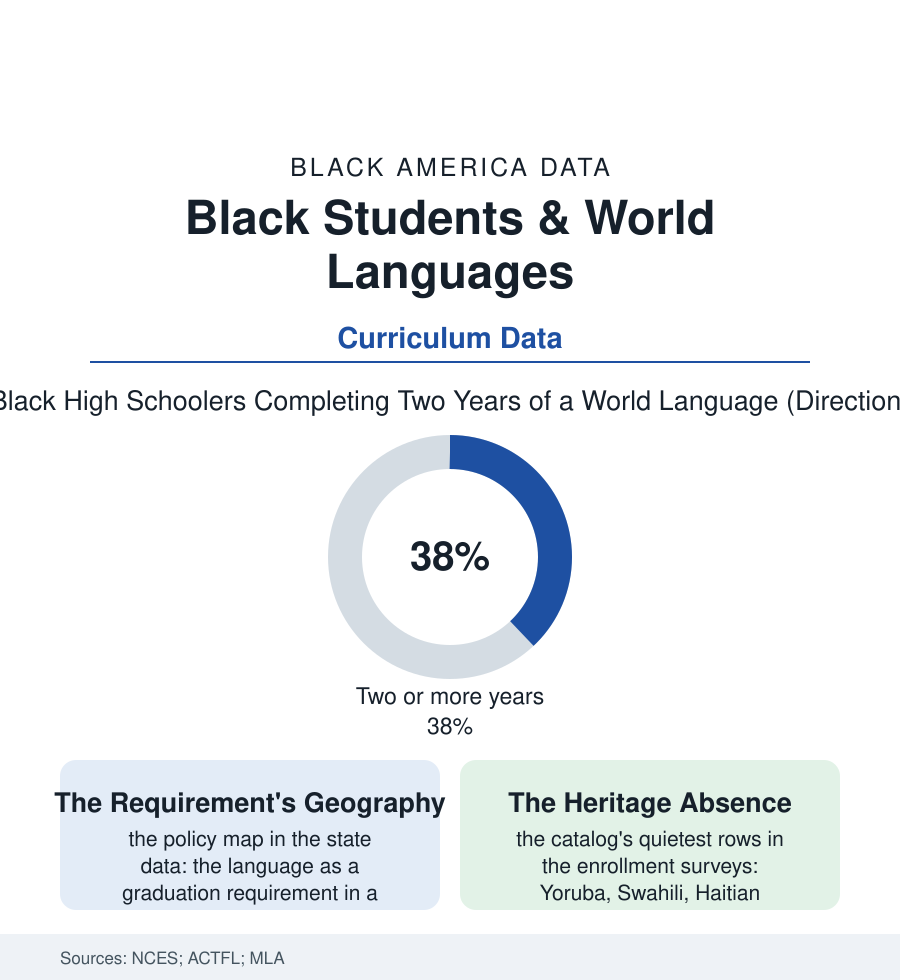

Black Education
The Language Lab: Who Gets to Learn the World's Tongues
The world-language classroom sorts as faithfully as the algebra track — Spanish everywhere, Mandarin and Arabic rationed, and the African languages of the diaspora's own heritage nearly absent from the catalog. The language file.

Every American high school publishes the same promise in another tongue: the world language, gateway to the global century. The course-taking data describe who actually walks through — the language lab's seats sorting by the school's wealth and the counselor's advice, the menu of languages itself a map of whose world counts. This article reads the language file.
The Menu and the Seating
The offering data first: Spanish's dominion (three of every four language students in the ACTFL surveys — the hemisphere's practical tongue and the staffing market's only deep pool), French's old prestige tier, and then the cliff — the strategically prized languages of the state's own lists (Mandarin, Arabic, Russian, Japanese) concentrated in the affluent schools whose parents demand them, the small district's catalog collapsing to Spanish and a prayer. The Black student's seat in the room sorts by the now-standard machinery: the track (the language sequence beginning in the middle school's advanced wing — the eighth-grade Spanish I seat as the gate to the fourth-year and AP rows — rationed by the same placement files as algebra's), the requirement's patchwork (the language a statute's mandate in a minority of states, a college's expectation in nearly all — the admissions currency hoarded by the advised), the heritage speaker's paradox (the Creole-speaking child of the census file's households placed in beginner French as a foreigner to her own grandmother's tongue, the seal-of-biliteracy programs of the recent record the first instruments to credit her), and the teacher pipeline (the language faculty's own demographics and shortages rationing the catalog year by year — the program canceled not by decision but by a resignation no one could backfill). The value data argue the stakes beyond the college gate: the bilingual wage premiums of the labor research, the federal workforce's language bonuses, the study-abroad file's compounding (the language student abroad at rates the abroad file already records as the system's most segregated extracurricular) — the global century's toolkit distributed, in the enrollment data, as one more advanced track wearing a friendlier name.
The Latin row deserves its footnote, because the Black school's relationship to the classical languages is one of this book's quiet glories: the segregated academies and the great Black high schools of the old cities kept Latin in the curriculum as a matter of doctrine — the dead language as the living proof that the race's children would be educated entire — and the Latin teachers of Dunbar and its peers sent their students to the era's examinations with results the newspapers recorded. The catalog's memory is longer than its current menu suggests.
The Missing Languages
The catalog's deepest silence is the file's own: the languages of Africa and its diaspora — Yoruba and Igbo, Swahili, Amharic, Haitian Creole, the Cape Verdean and Garifuna tongues of the immigrant files — offered, in the national school data, almost nowhere (the university rows scarcely better beyond a shelf of African-studies programs), the heritage of the students themselves classified as no language at all for the requirement's purposes. The exceptions prove the appetite in the program data: the dual-language immersions pairing Spanish with the neighborhood's tongues, the African-language magnets of the great cities drawing waitlists, the community schools of the Saturday file (the heritage academies run by the churches and the cultural centers — the language file's shadow system, uncounted by the NCES and unmistakable in the census of any immigrant-rich Black neighborhood), the digital tutors' long tail finally carrying the lessons the catalog would not. The forward data hold the demographic argument entire: the century's commerce tilting toward the continent of the students' ancestry at the speed of the trade statistics, the federal language-needs lists lengthening, the diaspora's children — in the interview record's plain words — asking for their own names' languages by name. The school that teaches a Black child Mandarin for the market and nothing of the tongue her name came from has made a curriculum decision the data can name. The language file files it, and notes the waitlists where the decision was made the other way.
Reading the Language Data
The language file is the education section's atlas within the atlas: whose world is a subject, whose is a gap. The ACTFL surveys publish the enrollments. The Saturday schools — full, voluntary, uncounted — publish the demand, in Yoruba, in Creole, in the mother tongues.
More in Black Education
Black Educational Attainment: High School Parity, the College Gap
About 89 percent of Black adults hold a high school diploma and one in four holds a bachelor's degree or higher — the attainment ladder, the college completion gap, and the generational trend.
Historically Black Colleges and Universities: Enrollment and Degrees
More than 100 HBCUs enroll roughly 290,000 students and award about one in six Black bachelor's degrees — an outsized share from a small sector. The federal education data.
Black College Enrollment: 2.4 Million Students
About 2.4 million Black students are enrolled in American colleges — nearly two-thirds of them women. The NCES enrollment data by sector, level, and trend.
Source: National Center for Education Statistics course-taking data; American Council on the Teaching of Foreign Languages enrollment surveys; Modern Language Association data.